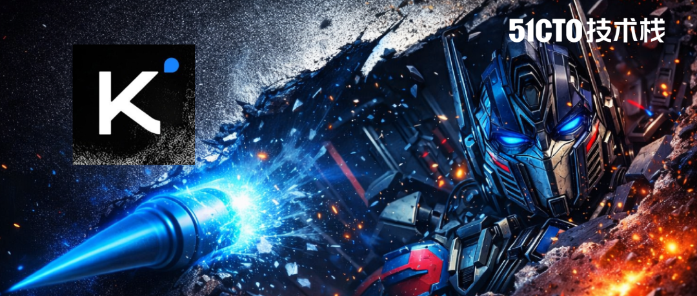
“那是 2015 年 ResNet 论文里的一行代码：h = h + f(h)。从 GPT 到 Claude，从 Llama 到 Gemini，全世界的 LLM 都在复用这个公式。直到今天，Kimi 把手伸向了它。”
就在刚刚，Moonshot AI（月之暗面）发布了一项足以撼动 Transformer 底层的研究：《Attention Residuals》。
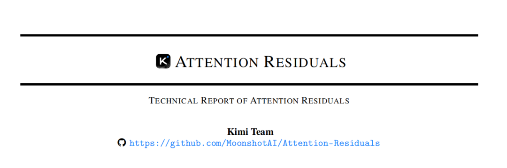
海外科技大 V，谷歌高级AI产品经理 Shubham Saboo 直接开启了“高赞”模式：“他们触碰了那个十年没人敢碰的部分。”
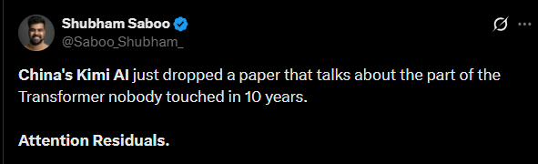
一个被视而不见的“结构性黑洞”
如何理解这个十年来没人触碰的“痼疾”呢？问题是这样的——
现在的 LLM 越来越深，但你有没有想过，第 1 层和第 50 层的输出，在现有的“残差连接”里权重居然是一模一样的？
这就好比你在做一个极其复杂的决策，第 1 步的直觉和第 50 步的缜密推理，被强制给予了相同的发言权。结果是什么？
稀释效应（Dilution）： 随着层数加深，后面层的贡献被前面庞大的累积量疯狂稀释。
无意义的增长： 为了不被淹没，深层网络不得不拼命放大输出。
这就是为什么现在的模型虽然深，但很多层其实是“冗余”的。
Kimi 团队敏锐地发现：这不就是当年 RNN 被 Transformer 干掉的原因吗？
残差连接（Residual connections）搭配 PreNorm已成为现代大语言模型中的标准结构，但这种机制会以固定的单位权重累积所有层的输出。这样的统一聚合方式会导致隐藏状态随着深度不断增长，逐渐稀释每一层本身的贡献。为了解决这一问题，我们提出 Attention Residuals（AttnRes）。
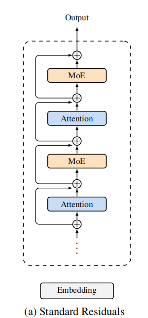
降维打击：从“线性求和”到“深度注意力”
当年，Transformer 用 Attention 解决了 RNN 将所有历史信息强行压缩进一个状态的瓶颈。
今天，Kimi 用同样的思路，解决了残差连接将所有历史层强行“盲目求和”的瓶颈。
核心逻辑如下：
不再是简单相加，而是给每一层一个“可学习的查询向量”。每一层现在会自己抬头看一眼前面所有层的产出，然后说：“这一层的逻辑我需要 80%，那一层的干扰我只要 2%。”
从“深度维度的线性叠加”进化到了“深度维度的 Softmax 注意力”。 这一跨越，让模型真正拥有了对深度信息的选择性过滤能力。
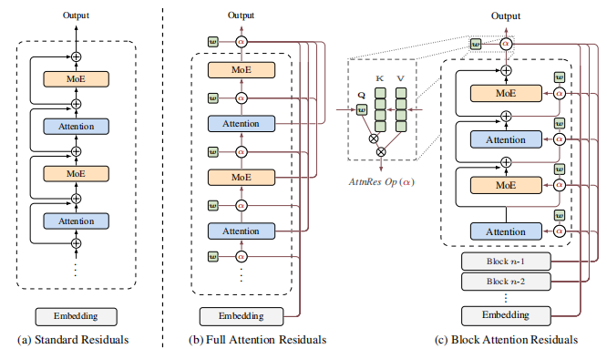
性能炸裂，几乎“免费”？
很多人会担心：每一层都要看前面所有层，计算量还不原地爆炸？
全量 AttnRes 虽然逻辑直接，但在大规模应用时需要 O(Ld) 的内存。
Kimi 团队继续祭出了 Block AttnRes（分块注意力残差），原理就是：
Block AttnRes 将层划分为 N 个分块，在每个分块内部通过标准残差进行累积，仅在块级表征上应用注意力。通过设置约 8 个分块，它在作为一种开销极小的实用“即插即用”方案的同时，能够保留全量 AttnRes 的大部分收益。
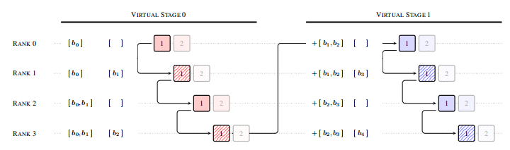
最后团队经过实验发现：
AttnRes 缓解了 PreNorm 稀释：输出幅度在深度上保持有界，梯度范数在各层之间分布更加均匀。
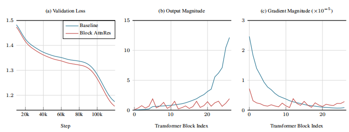
解决了这个行业难题，自然最后带来的工程实践性能也是肉眼可见的惊艳提升：
极低开销： 推理开销增加不到 2%，训练减慢不到 4%。
暴力提升： 在 48B 参数模型、1.4T Tokens 的实测中，所有榜单全线飘红！
逻辑进化： GPQA-Diamond（复杂推理）狂涨 7.5 分，数学提升 3.6 分，代码提升 3.1 分。
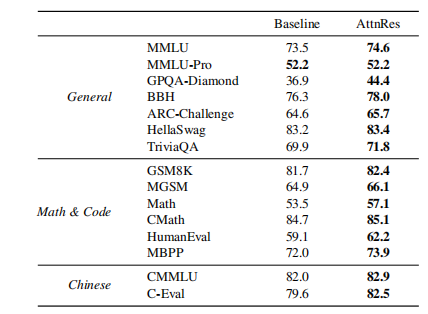
Shubham 忍不住在推文中表示，这相当于白捡了 1.25 倍的算力！
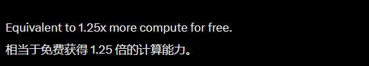
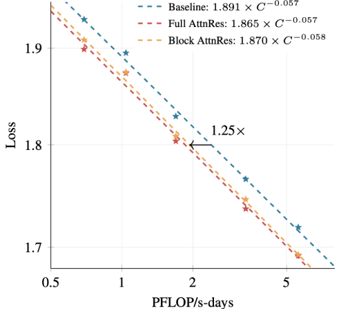
算法代码，小编也为大家扒下来了！
def block_attn_res(blocks: list[Tensor], partial_block: Tensor, proj: Linear, norm: RMSNorm) -> Tensor:
"""
块间注意力：对已完成的块表征 + 当前块的中间和进行注意力计算。
blocks: N 个形状为 [B, T, D] 的张量：之前每个已完成块的表征
partial_block: [B, T, D]：块内部分和 (b_n^i)
"""
V = torch.stack(blocks + [partial_block]) # [N+1, B, T, D]
K = norm(V)
# 计算注意力权重 (logits)
logits = torch.einsum('d, n b t d -> n b t', proj.weight.squeeze(), K)
# 加权聚合
h = torch.einsum('n b t, n b t d -> b t d', logits.softmax(0), V)
return h
def forward(self, blocks: list[Tensor], hidden_states: Tensor) -> tuple[list[Tensor], Tensor]:
partial_block = hidden_states
# 在 Attention 层之前应用块 AttnRes
# blocks 中已包含 Token 嵌入 (embedding)
h = block_attn_res(blocks, partial_block, self.attn_res_proj, self.attn_res_norm)
# 如果达到块边界，则开启新块
# block_size 包含 ATTN + MLP；每个 Transformer 层有 2 个组件
if self.layer_number % (self.block_size // 2) == 0:
blocks.append(partial_block)
partial_block = None
# 自注意力 (Self-attention) 层
attn_out = self.attn(self.attn_norm(h))
partial_block = partial_block + attn_out if partial_block is not None else attn_out
# 在 MLP 层之前应用块 AttnRes
h = block_attn_res(blocks, partial_block, self.mlp_res_proj, self.mlp_res_norm)
# MLP 层
mlp_out = self.mlp(self.mlp_norm(h))
partial_block = partial_block + mlp_out
return blocks, partial_block网友热评：Kimi这波洞察，太天才了！
Kimi 这篇论文，快速在 X 上引起了 AI 圈的注意与点赞。
一位网友给出了这样高度的评价： “把 PreNorm 稀释比作旧时代的 RNN 瓶颈，这个洞察太天才了！这是在大规模扩展模型深度时，除了堆算力之外遗失的‘关键拼图’。”
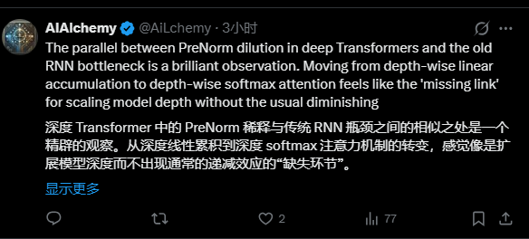
另一位网友也对于这一研究突破感到异常兴奋： “很有意思，这东西十年没人碰，直到现在的算力账单把大家都烧疼了，它突然就变成了革命。”
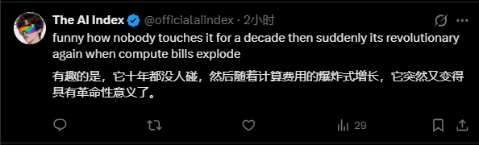
另一位AI圈的研究者则回顾了 Transformer 架构的进化路程，并称Kimi这次的发现如果推广应用开来的话，或能成为近十年来 Transformer 最重要的架构升级之一！
Transformer 通过增加时间注意力机制取代了 RNN。 这个想法增加了对深度的关注。 如果这种方法能够推广应用，它可能会成为近十年来 Transformer 架构最重要的升级之一
写在最后
按照今年一月杨植麟发布的内部信，Kimi K3 的目标是通过技术改进和进一步scaling，提升等效FLOPs至少一个数量级，在预训练水平上追平世界前沿模型！
这次，这篇论文的发布，可以看出杨植麟已经在“不再追赶、主动定义”的“登月旅程”上给出的一个强烈信号。
令人兴奋的是， 这篇论文重点不只是在刷榜，而是在挑战 AI 界近十年以来的“祖制”。
如果说以前的 Transformer 是在平地起高楼，那么 AttnRes 就是给高楼装上了电梯和精确的调度系统。
很快，Transformer 的传统“残差”时代或将迎来终结！
而 Kimi 团队，则开辟了一条新的“深度选择”路径！
https://x.com/Saboo_Shubham_/status/2033408489767444694
https://github.com/MoonshotAI/Attention-Residuals/blob/master/Attention_Residuals.pdf